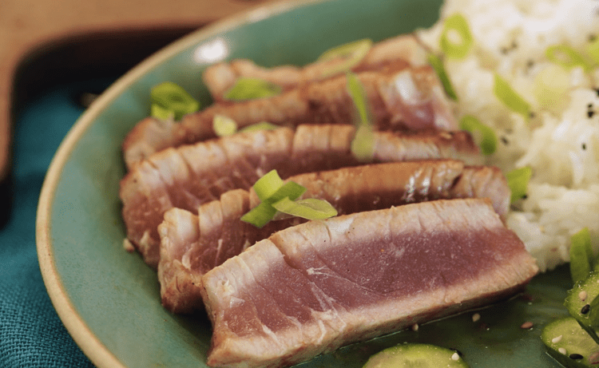

Ahi Tuna Steaks Recipe
Credits
Home

Description
Tooo na.
Ingredients List
- 2 (5 ounce) ahi tuna steaks
- 1 teaspoon kosher salt
- ¼ teaspoon cayenne pepper (Optional)
- ½ tablespoon butter
- 2 tablespoons olive oil
- 1 teaspoon whole peppercorns
Steps
- Pat tuna steaks dry and season on both sides with salt and cayenne pepper.
- Melt butter in a skillet over medium-high heat.
- Add olive oil and pepper corns; cook until peppercorns soften and pop, about 5 minutes.
- Gently place seasoned tuna in the skillet and cook to desired doneness, anywhere from 30 seconds to 1 1/2 minutes per side.
- Slice tuna into 1/4-inch thick slices to serve.
- Enjoy!